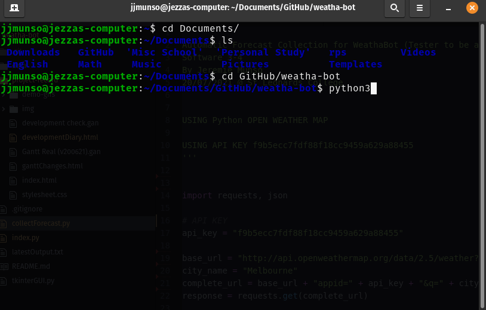
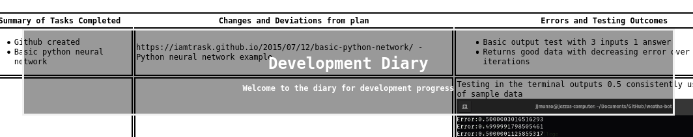
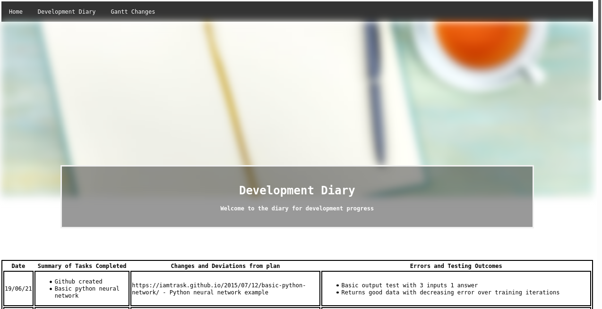
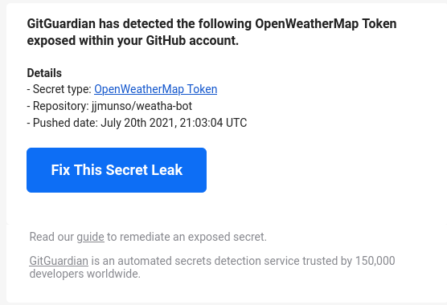

Development Diary
Welcome to the diary for development progress
| Date |
Summary of Tasks Completed |
Changes and Deviations from plan |
Errors and Testing Outcomes |
| 19/06/21 |
- Github created
- Basic python neural network
|
https://iamtrask.github.io/2015/07/12/basic-python-network/ - Python neural network example |
- Basic output test with 3 inputs 1 answer
- Returns good data with decreasing error over training iterations
|
|
21/06/21
|
- Implementation of CSV & Output File
- Empty CSV files (weatha.csv and usability.csv) added for future test data
- Basic text output file that saves the prediction to latestOutput.txt
- CSV read-and-append-to-array function (from Mr Anderson examples in T1)
|
CSV files need to be formatted in the following way to make them compatible with the ‘column reader’ code snippet from Unit 3 O1:
| Date |
Rainfall |
Temp Max |
Temp Min |
| XXX |
XXX |
XXX |
XXX |
| XXX |
XXX |
XXX |
XXX |
| XXX |
XXX |
XXX |
XXX |
|
Testing in the terminal outputs 0.5 consistently using 4 days of sample data
 |
|
22/06/21
|
- Implementation of Basic GUI with tkinter
- Merge pull request for GUI testing and Main
- Zips added to .gitignore to prevent unnessesary storage size
- Test data for past wetha and usability, added to files
- Updated gantt added to filess (development check.gan)
|
Using tkinter GRID system is useful for table but difficult to manage other gui elements that are loosely correlated to that grid positioning
|
 |
|
23/06/21
|
- Implementation of Project Record and Development Diary
- Addition of Background Images
- Addition of index.html, developmentDiary.html, ganttChanges.html & stylesheet.css
- 2x Explanatory Gifs
|
Built a simple webpage, hosted with Github Pages, to record project progress and back it up with all other files. Allows the implementation of animated gifs to better aid record.
|
 |
|
20/07/21
|
- Development of a Weather Forecast Collection script
|
Using Open Weather Map API, and python to get current weather data. Hoping to turn this into a method for collecting an up to date forecast for predictions. Using this article as a guide: https://towardsdatascience.com/weather-forecasting-with-machine-learning-using-python-55e90c346647?gi=3211813999a9
|
Current error getting rainfall data as the program doesn't recognise the tag 'rain'. Here is the relevant documentation for future reference: https://openweathermap.org/current#current_JSON

|
|
21/07/21
|
- Various Minor Changes
- Minor Fixes to project record
- Simplification of forecast collection script
- Development Diary Additions
- Fixed API key leak
|
Possible resolution to issue 3: https://github.com/jjmunso/weatha-bot/issues/3
|


Security leak of API fixed by removal of API key in future versions

|